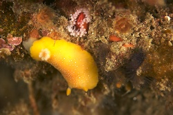
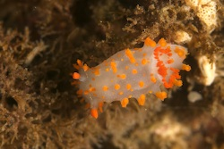
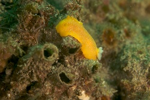
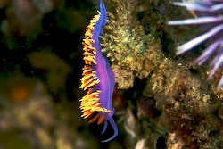
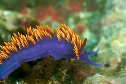
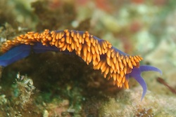
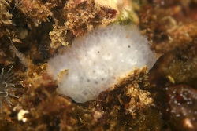
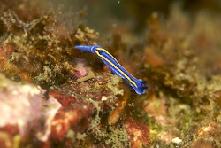
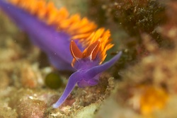

Channel Islands July 2007
Previous
4
5
6
7
8
9
Next
Aboard the Vision

Channel Islands 2007-07-17 08-50-07
|
White-spotted Dorrid (Doriopsilla albopunctata)

Channel Islands 2007-07-17 09-00-08
|
Clown Dorid (Triopha catalinae)

Channel Islands 2007-07-17 09-05-55
|
White-spotted Dorrid (Doriopsilla albopunctata)

Channel Islands 2007-07-17 09-17-55
|
Spanish Shawl (Flabellina iodinea)

Channel Islands 2007-07-17 10-55-39
|
Spanish Shawl (Flabellina iodinea)

Channel Islands 2007-07-17 10-56-04
|
Spanish Shawl (Flabellina iodinea)

Channel Islands 2007-07-17 11-03-28

Channel Islands 2007-07-17 11-09-50
|
Porter's Chromodorid (Mexichromis porterae)

Channel Islands 2007-07-17 11-14-02
|
White-spotted Dorrid (Doriopsilla albopunctata)